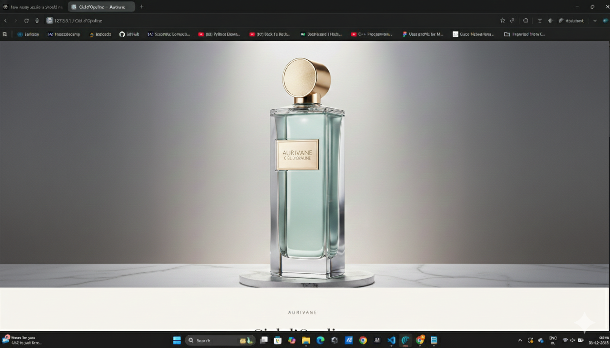

Light refracted through quiet skies.
Ciel d’Opaline exists between states — neither day nor night.
It feels mineral, expansive, and hushed, like light diffused through clouded glass.
A fragrance that lingers not in form, but in atmosphere.
A horizon held in stillness.